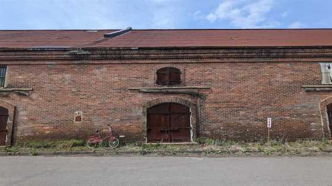
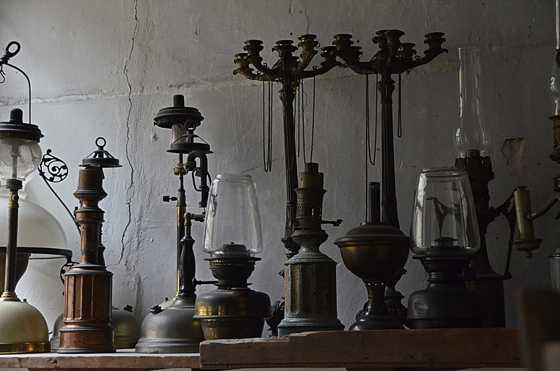
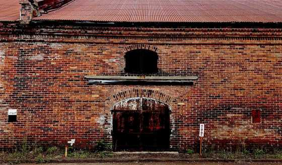
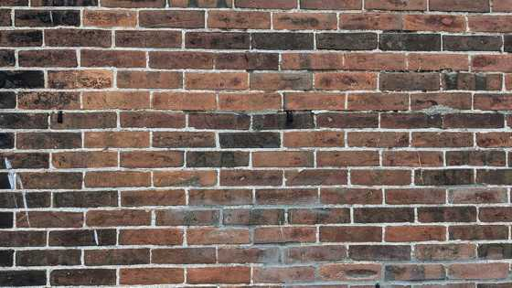
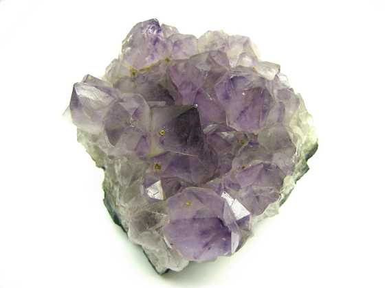
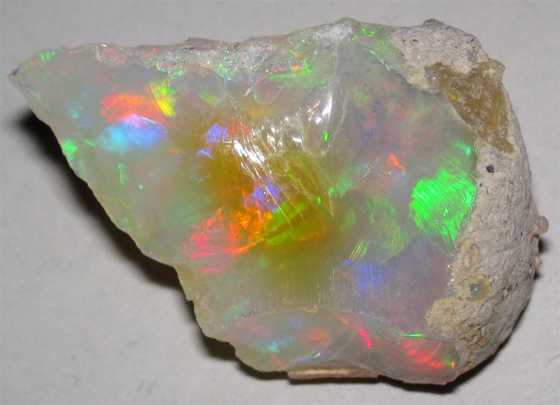
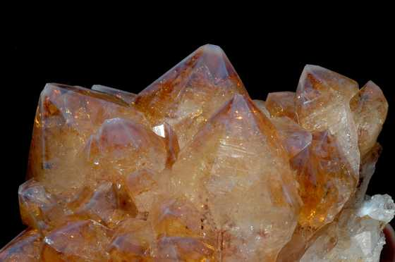
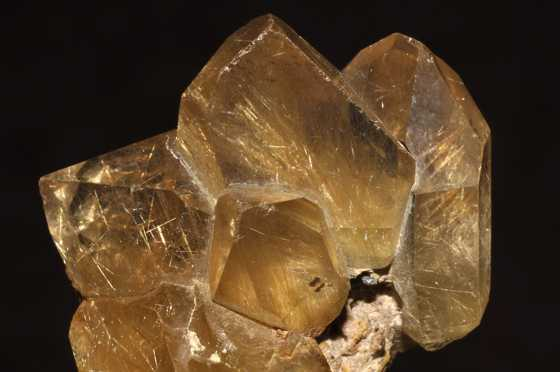
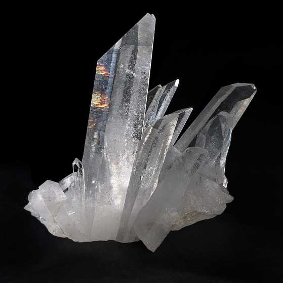
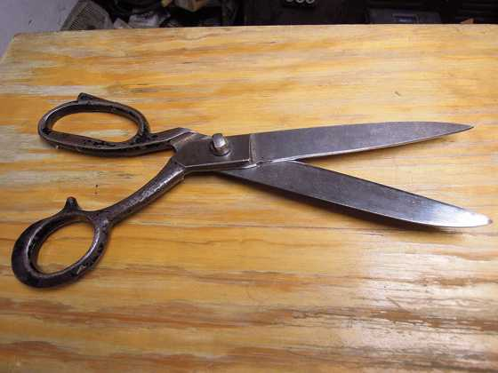

長崎県雲仙市吾妻町の美容室
光のあたり方で、
色を変える宝石のように。
ひとりひとりが輝く場所を。
店名のアレキサンドライトは、光によって色が変わる宝石。訪れる人を輝かせたい、という願いが込められています。
美容室 AS. alexandrite scissors
ABOUT
店名に込められた願い
紹介記事によると、店名の「AS.Alexandrite」は、オーナーの渡辺 伸一さんが修業した先の元オーナーから贈られた名前とのことです。アレキサンドライトは、当たる光によって色が変わる宝石。そこに、お客様一人ひとりを輝かせたいという願いが重ねられています。
福岡で美容の修業をして地元に戻り、南島原市有家町の美容室を経て、愛野町の新店で11年間店長を務めたのち、2019年3月30日に雲仙市吾妻町で独立オープンしました。性別や年齢を問わず、気軽に来られて、希望をしっかり叶えてくれる場所を目指していると紹介されています。島原半島各地から通うお客様も多いそうです。
店内はブルックリン風。段差を一段下がった空間にカット席が3席、シャンプー台は奥に置かれ、黒い鉄の小物や棚、ソファの待合、ペンダントライトが並びます。大工や内装業の友人たちの手も借りて作られたとのことです。
情報源: NEW OPEN AS. Alexandrite Scissors(アドシンク) / Instagram
見出しや語り口は制作側のイメージです。写真は赤レンガの建物や宝石などのフリー素材で、お店の実際の様子ではありません。




LIGHT AND COLOR
光で、色が変わる。
アレキサンドライトは、太陽の下と灯りの下で見え方が変わるとされる宝石です。ここでは、色の移ろいをイメージした鉱物の写真を並べました。





アレキサンドライトそのものではなく、制作側のイメージとして選んだ鉱物の写真です。
MENU
メニュー
紹介記事によると、次のような施術があるとのことです。料金・所要時間・最新の内容は変更されることがあるため、掲載せず「準備中」としています。



VOICE
お客様の声
イメージ例以下は制作側で作成したイメージ例であり、実在のお客様の声ではありません。
黒い鉄の棚と灯りがかっこよくて、入った瞬間に気分が上がりました。
イメージ例(20代)
やりたい髪型をちゃんと聞いてくれて、安心して任せられました。
イメージ例(30代)
年齢も性別も気にせず通えるので、家族みんなでお世話になりたいです。
イメージ例(40代)
ACCESS
アクセス・ご案内
| 所在地 | 〒859-1115 長崎県雲仙市吾妻町永中名10-2 |
|---|---|
| 電話 | 準備中 |
| 営業時間 | 準備中 |
| 定休日 | 準備中 |
| 駐車場 | 準備中 |
| SNS | Instagram @hair_shop_as |
最新の営業時間・ご予約方法はInstagramをご確認ください。